건설기계설비기사 (2010-03-07 기출문제)
1과목: 재료역학
1. 등분포 하중을 받고 있는 단순보와 잉단 고정보의 중앙점에서의 최대 처짐량의 비는? (단, 보의 굽힘감성 EI는 일정하다.)
- 3:1
- 5:1
- 24:1
- 48:1
(정답률: 알수없음)

2. 폭 20cm, 높이 30cm의 직사각형 단면을 가진 길이 300cm의 외발보는 자유단에 최대 몇 kN의 하중을 가할 수 있는가? (단, 허용 굽힘응력은 σa=15MPa이다.)
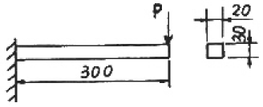
- 12
- 15
- 30
- 90
(정답률: 알수없음)
3. 길이가 L이고 단면적이 A인 토의 단면에 수직 하중이 작용하고, 작용하중 방향으로 변형률 ε이 발생하였다면 이 봉에 저장된 탄성에너지 U는 어떻게 표현되는가? (단, 봉의 탄성계수는 E이다.)
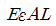
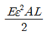
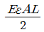
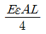
(정답률: 알수없음)
4. 지름 3mm의 철사로 평규지름 75mm의 압축코일 스프링을 만들고 하중 10N에 대하여 3cm의 처짐량을 생기게 하려면 감은 회수(n)는 대략 얼마로 해야 하는가? (단, 전단 탄성계수 G=88GPa이다.)
- n=8.9
- n=8.5
- n=5.2
- n=6.3
(정답률: 알수없음)
5. 직사각형 단면(폭×높이)이 4cm×8cm이고 길이 1m의 외팔보의 전 길이에 6kN/m의 등분포하중이 작용할 때 보의 최대 처짐각은? (단, 탄성계수 E=210GPa이고 보의 자중은 무시한다.)
- 0.0028rad
- 0.0028°
- 0.0008rad
- 0.0008°
(정답률: 알수없음)
6. 연강 1cm3의 무게는 0.0785N이다. 길이 15m의 둥근 봉을 매달 때 봉의 상단 고정부에 발생하는 인장응력은 몇 kPa인가?
- 0.118
- 1177.5
- 117.8
- 11890
(정답률: 알수없음)
7. 단면은 폭 5cm×높이 3cm, 길이가 1m의 단순 지지보가 중앙에 집중하중 4kN을 받을 때 발생하는 최대 굽힘응력은 약 몇 MPa인가?
- 133
- 155
- 143
- 125
(정답률: 알수없음)
8. 최대 사용강도(σmax)=240MPa, 지름 1.5m, 두께 3mm의 강재 원통형 용기가 견딜 수 있는 최대 압력은 몇 kPa인가? (단, 안전계수(SF)는 2이다.)
- 240
- 480
- 960
- 1920
(정답률: 알수없음)
9. 그림과 같은 돌출보가 있다. ωℓ=P일 때 이 보의 중앙점에서 굽힘 모멘트가 0이 되기 위한 길이의 비 a/ℓ는? (단, 보의 자중은 무시한다.)
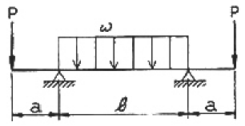
- 1/4
- 1/8
- 1/16
- 1/24
(정답률: 알수없음)
10. 주응력에 대한 설명 중 틀린 것은?
- 주응력 상태에서 전단응력은 0 이다.
- 주응력은 전단응력이다.
- 최대 전단응력은 주응력의 최대, 최소값의 평균치이다.
- 평면응력에서 주응력은 2개이다.
(정답률: 알수없음)
11. 단면적이 같은 원형과 정사각형의 단면 계수의 비는?
- 1:0.509
- 1:1.18
- 1:2.36
- 1:4.68
(정답률: 알수없음)
12. 지름 7mm, 길이 250mm인 연강 시험편으로 비틀림 실험을 하여 얻은 결과, 토크 4.08Nㆍm에서 비틀림 각이 8°로 기록되었다. 이 재료의 전단 탄성계수는 약 몇 GPa인가?
- 64
- 53
- 41
- 31
(정답률: 알수없음)
13. 어떤 탄성재료의 탄성계수 E와 전단 탄성계수 G사이에 성립하는 관계식으로 맞는 것은? (단, v는 재료의 포아송(Poisson)비이다.)
- E=2(1+v)G
- G=2(1+v)E
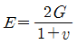
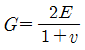
(정답률: 알수없음)
14. 그림과 같은 구조물에 1000N의 물체가 매달려 있을 때 두 개의 감선 AB와 AC에 작용하는 힘의 크기는 약 몇 N 인가?
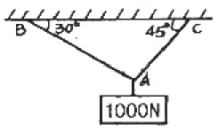
- AB=707, AC=500
- AB=732, AC=897
- AB=500, AC=707
- AB=897, AC=732
(정답률: 알수없음)
15. 지름 d의 축에 암(arm)을 달고, 그림과 같이 하중 P를 가할 때 축에 발생되는 최대 비틀림 전단응력은?
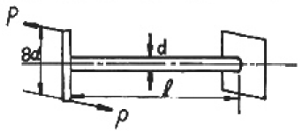
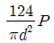
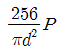
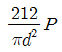
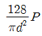
(정답률: 알수없음)
16. 그림과 같이 길이가 동일한 2개의 기둥 상단에 중심 압축 하중 2500N이 작용할 경우 전체 수축량은 약 몇 mm인가? (단, 단면적 A1=1000mm2, A2=2000mm2, 길이 L=300MM, 재료의 탄성계수 E=90GPa이다.)
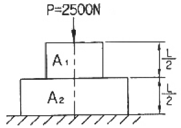
- 0.625
- 0.0625
- 0.00625
- 0.000625
(정답률: 알수없음)
17. 반지름 r인 원형 단면의 단순보에 전단력 F가 가해졌다면 이 때 단순보에 발생하는 최대 전단응력은?
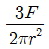
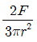
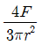
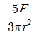
(정답률: 알수없음)
18. 길이 15m, 지름 10mm의 강봉에 8kN의 인장 하중을 걸었더니 탄성 변형이 생겼다. 이 때 늘어난 길이는? (단, 이 강재의 탄성계수 E=210GPa이다.)
- 7.3mm
- 7.3mm
- 0.73mm
- 0.073mm
(정답률: 알수없음)
19. 다음 중 기둥의 좌굽에 대한 설명으로 옳은 것은?
- 좌굴이란 기둥이 압축하중을 받아 길이 방향으로 변위되는 현상을 말한다.
- 도심에 압축하중이 작용하는 기둥의 좌굴은 안정성과 관련되어 있다.
- 좌굴에 대한 임계하중은 길이가 긴 기둥일수록 커진다.
- 편심 압축하중을 받는 기둥에서는 하중이 커져도 길이 방향 변위만 발생한다.
(정답률: 알수없음)
20. 그림과 같이 전체 길이가 3L인 외팗에 하중 P가 B점과 C점에 작용할 때 자유단 B에서의 처짐량은? (단, 보의 굽힘강성 EI는 일정하고, 자충은 무시한다.)
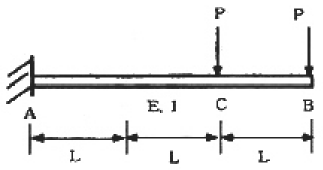
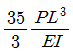
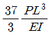
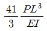
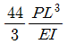
(정답률: 알수없음)
2과목: 기계열역학
21. 단순압축성 물질의 압력-체적-온도사이의 관계식을 나타내는 상태방정식 Pv=RI에 대한 다음 설명 중 잘못된 것은?
- 이상 기체의 저용할 때 정확한 결과를 얻는다.
- 압력이 충분히 높은 기체에 적용할 때 정확한 결과를 얻는다.
- 밀도가 충분히 낮은 기체에 적용할 때 정확한 결과를 얻는다.
- 분자 사이에 작용하는 힘이 없다고 가정할 수 있는 기체에 적용할 때 정확한 결과를 얻는다.
(정답률: 알수없음)
22. 상온의 감자를 가열하여 뜨거운 감자로 요리하였다. 감자의 에너지 변동중 맞는 것은?
- 위치에너지가 증가
- 엔탈피 감소
- 운동에너지 감소
- 내부에너지가 증가
(정답률: 알수없음)
23. 보일러 입구의 압력이 9800kN/m2이고, 복수기의 압력이 4900N/m2일 때 펌프 일은 약 몇 kJ/kg인가? (단, 물의 비체적은 0.001m3/kg이다.)
- -9.79
- -15.17
- -87.25
- -180.52
(정답률: 알수없음)
24. 다음 그림은 열교환기를 흐름 배열(flow arrangement)에 따라 분류한 것이다. 맞는 것은?
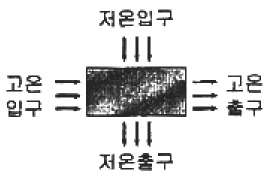
- 평행류
- 대향류
- 병행류
- 직교류
(정답률: 알수없음)
25. 절대압력 100kPa, 온도 100℃인 상태에 있는 수소의 비체적(m3/kg)은? (단, 수소의 분자량은 2이고, 일반기체상수는 8.3145kJ/이다.)
- 약 15.5
- 약 0.42
- 약 3.16
- 약 0.84
(정답률: 알수없음)
26. 분자량이 29이고, 정압비열이 10⑤J/kgㆍK인 기체의 기체상수는 약 몇 J/kgㆍK인가? (단, 일반기체상수는 8314.5J/이다.)
- 976
- 287
- 34.7
- 29.3
(정답률: 알수없음)
27. 다음의 열역학 상태량 중 종량적 상태량은?
- 압력
- 체적
- 온도
- 밀도
(정답률: 알수없음)
28. 어느 열기관이 33kW의 일을 발생할 때 1시간 동안의 일을 열량으로 환산하면 약 얼마인가?
- 83600kJ
- 104500kJ
- 118800kJ
- 988780kJ
(정답률: 알수없음)
29. 내부에너지가 40kJ, 절대압력이 200kPa, 체적이 0.1m3, 절대온도가 300K인 계의 엔탈피는 약 몇 kJ인가?
- 42
- 60
- 80
- 240
(정답률: 알수없음)
30. 500W의 전열기로 4kg의 물을 20℃에서 90℃까지 가열하는데 몇 분이 소요되는가? (단, 전열기에서 열은 전부 온도 상승에 사용된다. 물의 비열은 4180J/kgㆍK이다.)
- 16
- 27
- 39
- 45
(정답률: 알수없음)
31. 흑체의 온도가 20℃에서 80℃3로 되었다면 방사하는 복사 에너지는 약 몇 배가 되는가?
- 1.2
- 2.1
- 4.0
- 5.0
(정답률: 알수없음)
32. 반데발스(van der Waals)의 상태 방정식은
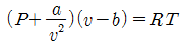
로 표시된다. 이 식에서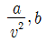
는 각각 무엇을 고려하는 상수인가?- 분자간의 작용 인력, 분자간의 거리
- 분자간의 작용 인력, 분자 자체의 부피
- 분자 자체의 중량, 분자간의 거리
- 분자 자체의 중량, 분자 자체의 부피
(정답률: 알수없음)
33. 다음과 같은 온도범위에서 작동하는 카르노(Carnot)사이클 열기관이 있다. 이 중에서 효율이 가장 좋은 것은?
- 0℃ 와 100℃
- 100℃ 와 200℃
- 200℃ 와 300℃
- 300℃ 와 400℃
(정답률: 알수없음)
34. 고체에 에너지를 전달하여 온도를 높이는 여러가지 방법들 중에서 전달되는 에너지가 일이 아닌 것은?
- 프레스로 소성 변형시킨다.
- 전원을 연결하여 전류를 통과시킨다.
- 자기장을 가하여 자화시킨다.
- 강력한 빛을 쪼인다.
(정답률: 알수없음)
35. 체적이 D 1m3인 튼튼한 밀폐 용기에 물이 50kg 들어있으며 그 압력은 100kPa이다. 이 포화상태의 물을 가열할 경우 일어나는 변화로 알맞은 것은? (단, 물의 임계점에서의 비체적은 0.003155m3/kg이고 100kPa에서의 포회수 및 포화증기의 비체적은 각각 0.001043m3/kg, 1.694m3/kg 이다.)
- 기화가 일어나 수증기로 바뀌면서 압력과 온도가 올라간다.
- 응축이 일어나 액체 상태로 바뀌면서 압력과 온도가 올라간다.
- 액체와 증기의 비율이 그대로 유지된 채로 압력과 온도가 올라간다.
- 기화가 일어나 수증기로 바뀌면서 압력과 온도는 그대로 유지된다.
(정답률: 알수없음)
36. 입력 250kPa, 체적 0.35m3의 공기가 일정 압력 하에서 팽창하여, 체적이 0.5m3로 되었다. 이때의 내부에너지의 증기가 93.9kJ이었다면, 팽창에 필요한 열량은 약 몇 kJ인가?
- 43.8
- 56.4
- 131.4
- 175.2
(정답률: 알수없음)
37. 잘 단열된 노즐에서 공기가 0.45MPa에서 0.15MPa로 팽창한다. 노즐 입구에서 공기의 속도는 50m/s, 온도는 150℃이며 출구에서의 온도는 45℃이다. 출구에서의 공기의 속도는? (단, 공기이 정압비열과 정적비열은 1.0035kJ/kgㆍK, 0.7165kJ/kgㆍK이다.)
- 약 350m/s
- 약 363m/s
- 약 455m/s
- 약 462m/s
(정답률: 알수없음)
38. 고온열원(T1)과 저온열원(T2)사이에서 역카르노 사이클에 의한 열펌프(heat pump)의 성능계수는?
- (T1-T2)/T1
- T2/(T1-2)
- T1/(T1-T2)
- (T1-T2)/T2
(정답률: 알수없음)
39. 이상기체 1kg이 가역동물 과정에 따라 P1-2kPa, V1=0.1m3로부터 VZ=0.3m3로 변화했을 때 기체가 한 일은 몇 주물(J)인가?
- 9540
- 2200
- 954
- 220
(정답률: 알수없음)
40. 그림은 압력-온도선도이다. 다음 설명 중 틀린 것은?
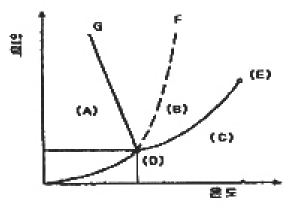
- (A)는 고체, (B)는 액체, (C)는 기체이다.
- (D)는 상중점으로 물의 경우 압력은 대기압보다 낮다.
- (E)는 임계점이다.
- 융해곡선으로서 물은 파선 F에, 그 밖의 대부분의 물질은 실선 G에 해당한다.
(정답률: 알수없음)
3과목: 기계유체역학
41. 안지름 0.1m의 관로에서 관 벽의 마찰 손실수두가 속도 수두와 같다면 그 관로의 길이는 몇 m 인가? (단, 관마찰계수 f=0.03이다.)
- 1.58
- 2.54
- 3.33
- 4.52
(정답률: 알수없음)
42. 유량 5m3/min, 속도 9m/s, 비중 1인 물 제트가 고정된 평면 판에 수직으로 충돌하고 있는 경우 평면 판에 작용하는 힘은 몇 N인가?
- 45
- 450
- 750
- 7500
(정답률: 알수없음)
43. 그림과 같은 단면적 1m2인 탱크에 설치된 노즐이 수두1m에서의 유량 Q를 2배로 하기 위해서는 수면 상에 몇 kg정도의 피스톤을 놓아야 하는가?
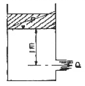
- 1000
- 2000
- 3000
- 4000
(정답률: 알수없음)
44. 유체 속에 잠겨있는 경사진 관의 윗면에 작용하는 압력 힘의 작용점에 대한 설명 중 맞는 것은?
- 관의 도심보다 위에 있다.
- 관의 도심에 있다.
- 관의 도심보다 아래에 있다.
- 관의 도심과는 관계가 없다.
(정답률: 알수없음)
45. 그림과 같이 관로에서 액주계가 설치되어 있을 때 공기의 속도는 약 몇 m/s인가? (단, 공기의 밀도는 1.23kg/m3이다.)
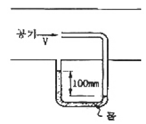
- 1.4
- 28.2
- 39.9
- 44.3
(정답률: 알수없음)
46. 평판을 지나는 경계층 유동에서 속도 분포가 경계층 바깥에서의 균일 속도, 경계층 내에서는 벽으로부터의 거리의 1차함수라고 가정하면 배제두께(displacement thickness) δ°와 경계층의 두께 δ의관계는?
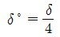
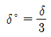
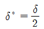
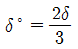
(정답률: 알수없음)
47. 어떤 액체의 밀도가 액체 표면으로부터 길이(h)에 따라 선형으로 변화할 때 (ρ=ρo+Kh, ρo=액체표면에서의 밀도, K=상수) 깊이에 따른 압력을 식으로 표현하면?
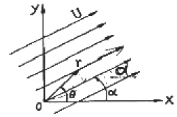
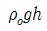
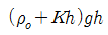
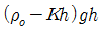
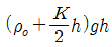
(정답률: 알수없음)
48. 그림과 같이 속도의 크기 U로 x축과 임의의 각도 α를 가지고 흐느는 균일 직선유동에 대한 유동함수(stream function) ⍦를 극좌표 r, θ로 나타낸 것은?
- ⍦=Ursin(θ-α)
- ⍦=Ursin(α-θ)
- ⍦=Urcos(θ-α)
- ⍦=Urcos(α-θ)
(정답률: 알수없음)
49. 절대압력을 정하는데 기준(영점)이 되는 것은?
- 게이지압력
- 표준대기압
- 국소대기압
- 완전진공
(정답률: 알수없음)
50. 원심 펌프로 기름을 압송한다. 이 펌프의 회전수는 1000rpm이고, 기름의 동점성계수는 7×10-4m2이다. 이 펌프의 모형을 만들어서 1.56×10-4m2/s의 동점성계수를 갖는 공기를 이용하여 모형 실험을 하려고 한다. 모형 펌프의 지름을 원형 펌프의 3배로 하였을 때 모형 펌프의 회전수는 약 몇 rpm인가?
- 20
- 25
- 30
- 35
(정답률: 알수없음)
51. 밀도가 500kg/m3면 원기둥이 1/3만큼 액체면 위로 나온 상태로 떠있다. 이 액체의 비중은?
- 0.33
- 0.5
- 0.75
- 1.5
(정답률: 알수없음)
52. 나란한 두개의 평판 사이의 층류 유동엣 속도 분포는 포물선 형태를 보인다. 평균 속도(Vmean)와 중심에서의 최대 속도(Vmax)의 관계는?
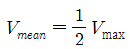
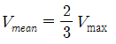
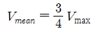
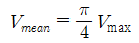
(정답률: 알수없음)
53. 지름이 1cm인 원통 관에 0℃의 물이 흐르고 있다. 평균 속도가 1.2m/s이고, 0℃물의 동점성계수가 1.788×10-6m2/s일 때, 이 흐름의 레이놀즈 수는?
- 2356
- 4282
- 6711
- 7801
(정답률: 알수없음)
54. 다음의 속도장 중에서 연속방정식을 만족시키는 유체의 흐름은 어느 것인가? (단, u는 x방향의 속도성분, v는 y방향의 속도성분)
- u=2x2-y2, v=-2xy
- u=x2-y2, v=-4xh
- u=x2-y2, v-2xy
- u=x2-y2, v—2xy
(정답률: 알수없음)
55. 에너지의 차원을 옳게 표시한 것은? (단, F:힘, M:질량, L:거리, T:시간)
- [ML]
- [FLT-1]
- [ML2T2]
- [MLT-2]
(정답률: 알수없음)
56. 어떤 기름의 점성계수가 1.6×102Nㆍs/m2이고 밀도는 800kg/m3이다. 이 기름의 동점성계수는 몇 m2/s인가?
- 2.0×10-2
- 2.0×10-3
- 2.0×10-4
- 2.0×10-5
(정답률: 알수없음)
57. 내경 30cm의 원 관 속을 절대압력 0.32MPa, 온도 27℃인 공기가 4kg/s로 흐를 때 이 원 관속을 흐르는 공기의 평균 속도는 약 몇 m/s인가? (단, 공기의 기체상수 R=287J/kgㆍK’이다.)
- 15.2
- 20.3
- 25.2
- 32.5
(정답률: 알수없음)
58. 에너지선(Energy Line)에 관한 설명으로 옳지 않은 것은?
- 위치수두+정압수두+등압수두를 연결한 선이다.
- 에너지선의 높이는 피토관을 사용하여 정체압을 측정함으로써 얻을 수 있다.
- 수력기술기선보다 정압수두 만큼 크다.
- 관로를 따라서 위치에 따라른 전체 수두를 시각적으로 볼 수 있다.
(정답률: 알수없음)
59. 다음 중 무차원 항이 아닌 것은?
- Reynolds 수
- 양력계수
- 비중
- 음속
(정답률: 알수없음)
60. 지름 8츠의 구가 공기 중을 20m/s의 속도로 운동할 때 항력은 약 몇 N인가? (단, 공기 밀도는 1.2kg/m3, 항력계수는 CD는 0.6이다.)
- 0.724
- 7.24
- 72.4
- 0.0724
(정답률: 알수없음)
4과목: 유체기계 및 유압기기
61. 이소옥탄 100mL와 노말 헵탄 20mL를 혼합한 연료의 옥탄가는?
- 약 80
- 약 17
- 약 20
- 약 83
(정답률: 알수없음)
62. 연소실의 최대체적이 50cc, 최소체적이 20cc, 회전 피스톤의 수가 3개인 로터리 기관의 총배기량은?
- 90cc
- 120cc
- 180cc
- 210cc
(정답률: 알수없음)
63. 가솔린기관에서 혼합비가 농후할 때 일어날 수 잇는 사항이 아닌 것은?
- 기관의 회전이 불규칙해진다.
- 배기가스 색이 흑색이다.
- 기관이 과열된다.
- 점화플러그 전극이 백색이다.
(정답률: 알수없음)
64. 디젤기관에서 시비데 사이클의 열효율을 디젤 사이클의 열효율로 바꾸려면? (단, 차단비 : σ, 압력상승비 : ρ)
- 압력상승비(ρ)를 0으로 한다.
- 차단비(σ)를 0으로 한다.
- 압력상승비를 1로 한다.
- 차단비를 1로 한다.
(정답률: 알수없음)
65. 디젤기관의 연소과정과 운전특성에 영향을 주는 요소로 가장 거리가 먼 것은?
- 연료 분사량
- 연료 분사시기
- 배기가스 재순활율
- 연소실의 종류
(정답률: 알수없음)
66. P-V 선도에서 단열변화를 나타내는 식은?
- pv = 일정
- pvk = 일정
- pvk-1 = 일정
- pvk+1 = 일정
(정답률: 알수없음)
67. 크랭크 축이 갖추어야 할 조건이 아닌 것은?
- 내피로성
- 하중 부담능력
- 내부식성
- 인장성
(정답률: 알수없음)
68. 밸브 작동기구에서 DOHC 다이렉트형식 기관의 특징이 아닌 것은?
- 흡배기효율을 향상시킬 목적으로 4밸브를 많이 사용한다.
- 실린더헤드의 구조가 복잡하다.
- 밸브의 경사각도, 흡배기 포트의 형상, 점화플러그의 설치 등이 양호하여 출력이 향상된다.
- 밸브 스템 엔드위에 설치된 스윙 암을 통하여 밸브를 개폐시킨다.
(정답률: 알수없음)
69. 디젤기관의 최고출력이 가솔린기관에 비해 낮은 이유는?
- 압축압력이 높기 때문
- 기관의 중량이 가볍기 때문
- 항상 공기 부족상태이기 때문
- 최고 회전속도를 높일 수 없기 때문
(정답률: 알수없음)
70. 이론 평균 유효압력을 Pmlh, 도시평균 유효압력을 Pml, 체통평균 유효압력을 Pmb라 할 때, 압력이 큰 것부터 바르게 나열한 것은?
- Pmlh ＞ Pml ＞ Pmb
- Pml ＞ Pmlh ＞ Pmb
- Pmb ＞ Pmlh ＞ Pml
- Pml ＞ Pmb ＞ Pmlh
(정답률: 알수없음)
71. 점성계수(coeflicient of viscosity)는 성질이다. 점성이 지나치게 큰 경우 유압기기에 나타나는 현상이 아닌 것은?
- 유동 저항이 지나치게 커진다.
- 마찰에 의한 동력손실이 증대된다.
- 밸브나 파이프를 통과할 때 압력 손실이 커진다.
- 부품 사이에 윤활 작용을 하지 못한다.
(정답률: 알수없음)
72. 다음 중 유압이 140kgf/cm2이고, 토출량이 200L/min 이상의 고압 대유량에 사용하기에 가장 적당한 펌프는?
- 회전 피스톤 펌프
- 기어 펌프
- 욍복동 펌프
- 베인 펌프
(정답률: 알수없음)
73. 1회전 유량이 40cc인 베인모터가 있다. 공급 유압을 600N/cm2, 유량을 30L/min으로 할 때 발생할 수 있는 최대 토크(torgue)는 약 몇 Nㆍm 인가?
- 28.2
- 38.2
- 48.2
- 58.2
(정답률: 알수없음)
74. 그림과 같은 유압 회로도에서 릴리프 밸브는?
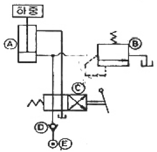
- Ⓐ
- Ⓑ
- Ⓒ
- Ⓓ
(정답률: 알수없음)
75. 관(튜브)의 끝을 넓히지 않고 관과 슬리브의 막힘, 또는 마찰에 의하여 관을 유지하는 관 이음쇠는?
- 플랜지 관 이음쇠
- 스위블 이음
- 플레어드 관 이음쇠
- 플레어리스
(정답률: 알수없음)
76. 유압 작동유가 구비하여야 할 조건 설명으로 틀린 것은?
- 넓은 온도 변화에 대하여 점도 변화가 작을 것
- 적합한 유막 강도가 있고 윤활성이 좋을 것
- 열을 잘 방출할 수 있을 것
- 공기의 용해도가 많을 것
(정답률: 알수없음)
77. 압력 제어 밸브들로만 구성되어 있는 것은?
- 릴리프 밸브, 무부하 밸브, 스로틀 밸브
- 무부하 밸브, 체크 밸브, 감압 밸브
- 셔틀 밸브, 릴리프 밸브, 시퀀스 밸브
- 카운터 밸런스 밸브, 시퀀스 밸브, 릴리프 밸브
(정답률: 알수없음)
78. 그림과 같은 유압ㆍ공기압기호의 명칭은?
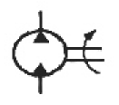
- 유압전도장치
- 정용량형 펌프ㆍ모터
- 차동실린더
- 가변용량형 펌프ㆍ모터
(정답률: 알수없음)
79. 유압기기 중 오일의 점성을 이용한 기계, 유속을 이용한 기계, 팽창 수축을 이용한 기계로 분류할 때 정성을 이용한 기계로 가장 적합한 것은?
- 토크 컨버터(torque converter)
- 쇼크 업소버(shock absorber)
- 압력계(pressure gage)
- 진공 개폐 밸브(vacuum open-closed valve)
(정답률: 알수없음)
80. 구조가 간단하며 값이 싸고 유입유 중의 이물질에 의한 고장이 생기기 어렵고 가득한 조건에 잘 견디는 유압모터로 가장 적합한 것은?
- 베인 모터
- 기어 모터
- 액시얼 피스톤 모터
- 레이디얼 피스톤 모터
(정답률: 알수없음)
5과목: 건설기계일반 및 플랜트배관
81. 머시닝센터의 프로그램시 테이블 이송과 관련이 가장 적은 것은?
- G00
- G01
- G03
- G04
(정답률: 알수없음)
82. 주조품 제조 시 사용하는 모험(pattern)의 분류 방법 중 구조에 따라 분류할 때 이에 속하지 않는 것은?
- 목형(wood pattern)
- 골조 모형(skeleton pattern)
- 코어 모형(core pattern)
- 현형(solid pattern)
(정답률: 알수없음)
83. 강의 표면 경화법에 해당 되지 않는 것은?
- 화염경화법
- 탈탄법
- 질화법
- 청화법(시안화법)
(정답률: 알수없음)
84. 최소 측정값이 120mm인 버니어캘리퍼스에 대한 설명으로 옳은 것은?
- 본척의 최소 눈금이 1mm, 부척의 1눈금은 12mm를 25등분한 것
- 본척의 최소 문금이 1mm, 부척의 1눈금은 19mm를 20등분한 것
- 본척의 최소 눈금이 0.5mm, 부척의 1눈금은 19mm를 25등분한 것
- 본척의 최소 눈금이 0.5mm, 부척의 1눈금은 24mm를 20등분한 것
(정답률: 알수없음)
85. M6×1.0 의 나사에서 탭(tap)을 가공하고자 할 때 가장 적당한 드릴의 지름은?
- 7mm
- 6mm
- 5mm
- 4mm
(정답률: 알수없음)
86. 분괴압연 작업에서 만들어진 강편으로서 4각형 또는 정방형 단면의 소재로서 250mm×250mm에서 450mm×450mm정도의 크기를 갖는 비교적 큰 재료의 명칭은?
- 블롬(bloom)
- 슬래브(slab)
- 빌릿(billet)
- 플랫(flat)
(정답률: 알수없음)
87. 만네스만 압연기와 유사한 방법으로 파이프의 지름을 확대 하는데 많이 이용하는 그림과 같은 구조로 되어 있는 것은?
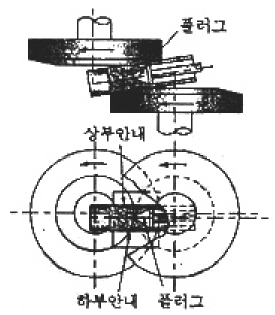
- 플러그밀(Plugmill)
- 필거 압연기(Pilger mill)
- 스티펠 천공기(Stiefel piercer)
- 마관기(Reeling machine)
(정답률: 알수없음)
88. 용접부의 결함을 검사하는 방법 중 파괴시험법에 속하는 것은?
- 외관시험
- 초음파 탐상시험
- 피로시험
- 음향시험
(정답률: 알수없음)
89. 공구연삭기에 A60N5V의 연삭숫돌을 고정하였다. 숫돌의 지름 300mm, 회전수가 1800rpm일 때 숫돌의 원주속도는 몇 m/min정도인가?
- 약 1321.2
- 약 1450.3
- 약 1625.5
- 약 1696.5
(정답률: 알수없음)
90. 다음 중 구멍의 내면을 가장 정밀하게 가공하는 방법은?
- 드릴링(drilling)
- 소양(sawing)
- 펀칭(punching)
- 호닝(honing)
(정답률: 알수없음)
91. 36% Ni 성분을 지니는 Fe-Ni 합금으로 상온에서 열팽창율이 탄소강의 약 1/10에 불과하여 불변강에 해당하는 합금은?
- 쾌삭감
- 인바(Invar)
- 단조감
- 서멧(Cermet)
(정답률: 알수없음)
92. 아스팔트 피니서에서 노면에 살포된 아스팔트 혼합재를 매끈하게 다듬질하는 판에 해당하는 것은?
- 스크리드
- 리시빙 호퍼
- 피더
- 스프레이팅 스크루
(정답률: 알수없음)
93. 모터그레이더의 주행동력 전달순서로 가장 적합한 것은?
- 엔진(기관)→클러치→변속기→감속기어→피니언 베벨기어→탠덤 드라이브→휠
- 엔진(기관)→클러치→변속기→피니언베벨기어→감속기어→탠덤드라이브→휠
- 엔진(기관)→클러치→변속기→감속기어→탠덤드라이브→피니언 베벨기어→휠
- 엔진(기관)→클러치→피니언 베벨기어→변속기→감속기어→탠덤 드라이브→휠
(정답률: 알수없음)
94. 건설기계관리법에 따라 건설기계의 소유자는 그 건설기계에 대하여 국토해양부령으로 정하는 바에 따라 국토해양부 장관이 실시하는 검사를 받아야 한다. 이 때 검사 대상에 해당하는 건설기계에 해당하지 않는 것은?
- 정격하중 6톤 타워 크레인
- 자체중량 3톤의 로더
- 무한궤도식 불도저
- 적재용량 10톤 덤프트럭
(정답률: 알수없음)
95. 1개의 안내륜(전륜)과 2개의 구동륜(후륜을 가지고 있고, 3개의 바퀴가 삼각형 형태로 이루어져 있으며 일반적으로 중량 6~15ton, 다짐 폭 1600~2080mm이며 자갈, 모래, 흙 등을 다지는데 효과적이나 아스팔트의 마지막 다짐에는 사용하기 힘든 롤러는?
- 머캐덤 롤러(macadam roller)
- 텐덤 롤러(tandem roller)
- 탬핑 롤러(tamping roller)
- 타이어 롤러(tire roller)
(정답률: 알수없음)
96. 셔블계 굴착기의 어태치먼트에 따라 할 수 있는 작업으로 거리가 먼 것은?
- 크레인 작업
- 콘크리트 포설
- 어드(earth)드릴 작업
- 기둥박기 작업
(정답률: 알수없음)
97. 도저로 작업 시 슬롯 압토법(홉 송트법)을 하는 목적으로 가장 가까운 것은?
- 토사를 빨리 적재하기 위하여
- 토사가 흘러넘치는 것을 방지하기 위하여
- 토사를 고르게 다지기 위하여
- 토사 파기를 빨리 하기 위하여
(정답률: 알수없음)
98. 모터 그레이더의 중량이 17톤이다. 제동초속도가 26km/h일 때 성능 기준상 제동거리는 몇 m 이내 이어야 하는가?
- 6.9
- 9.0
- 11.4
- 14.6
(정답률: 알수없음)
99. 건설기계 장치에서 그 성격이 다른 것은?
- 백호
- 지게차
- 클램셸
- 드래그 라인
(정답률: 알수없음)
100. 기중기(crane)의 주요 작업장치 중 트랜치 호(trenchhoe)의 용도로 가장 적합한 것은?
- 배수로 작업, 굴토 작업, 송유관 매설 작업
- 건물의 기둥박기, 교량의 교주 항타 작업
- 토사적재, 수직굴토, 오물제거, 수중 굴착 작업
- 제방 및 배수로 구축작업, 토사 적재 작업
(정답률: 알수없음)
단순보의 경우, 중앙점에서의 최대 처짐량은 qL^4 / (8EI) 이다. 여기서 q는 단위 길이당 하중, L은 보의 길이, EI는 굽힘감성을 나타낸다.
잉단 고정보의 경우, 중앙점에서의 최대 처짐량은 5qL^4 / (384EI) 이다. 이는 단순보의 경우보다 60배나 큰 값이다.
따라서, 단순보와 잉단 고정보의 중앙점에서의 최대 처짐량의 비는 5:1이 된다.